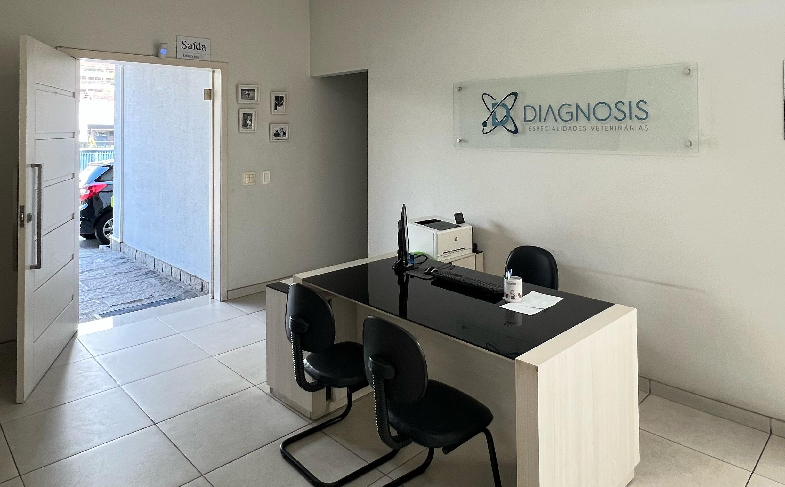
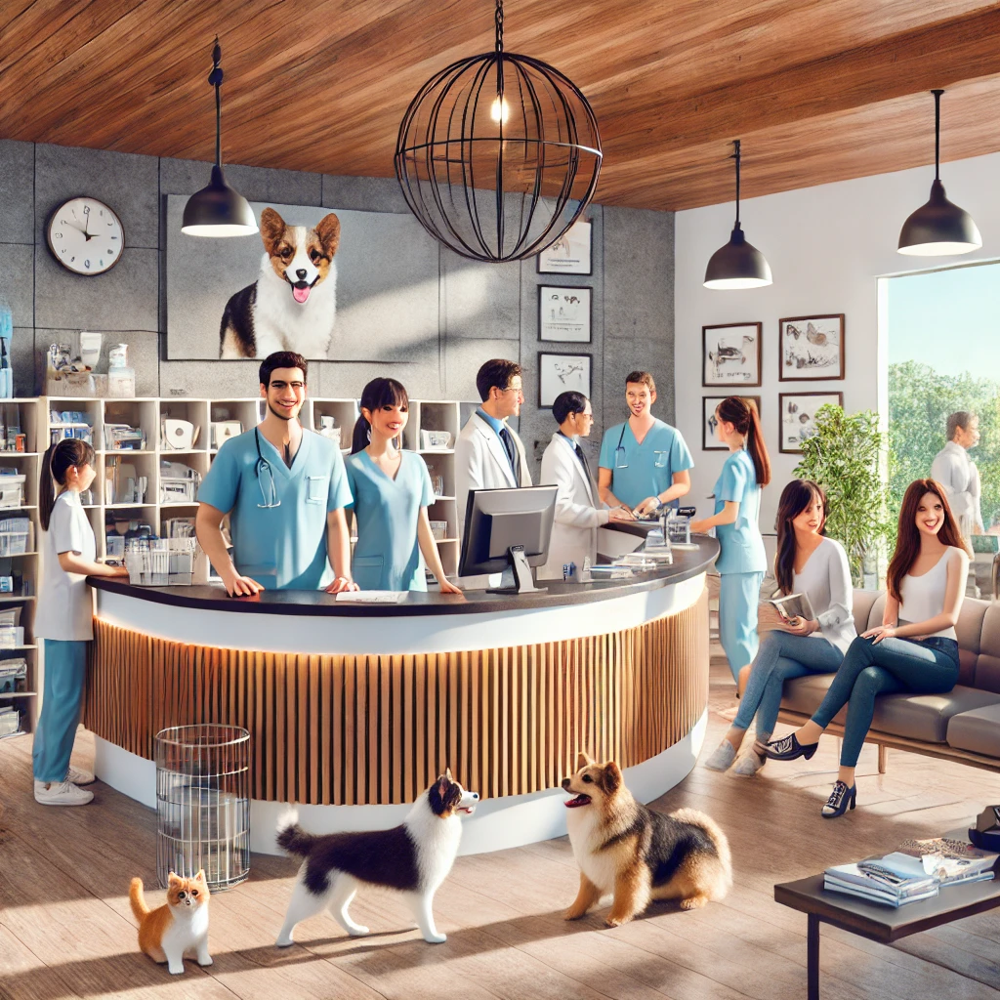

Diagnosis
Alta tecnologia para diagnósticos precisos e tratamentos eficazes.
Exames simples e contrastados Laudos para Displasia Coxofemoral e Cotovelo Telerradiologia
Inseminação artificial, Resfriamento e congelamento de sêmen, Banco de sêmen, Tratamento da infertilidade
Tratamentos oncológicos especializados
Ecocardiograma Eletrocardiograma Consultas cardiológicas
Abdominal, Articular, Cervical, Gestacional, Doppler colorido Intervencionista
Digestiva alta, Colonoscopia, Rinoscopia
A DIAGNOSIS é um centro de diagnóstico veterinário reconhecido pela excelência técnica, compromisso ético e atendimento humanizado. Nossa missão é oferecer diagnósticos precisos e confiáveis, proporcionando suporte essencial para a saúde e bem-estar dos animais.
Sempre em busca da inovação e aprimoramento contínuo, contamos com uma equipe altamente qualificada e atualizada, trazendo aos médicos veterinários e parceiros as mais recentes inovações em diagnóstico por imagem na medicina veterinária.
Seja nosso parceiro e tenha acesso a exames de alta precisão e tecnologia de ponta!
Exames de alta precisão para garantir o bem-estar dos seus animais.
Agendar ConsultaDiagnósticos precisos por imagem, incluindo exames contrastados e telerradiologia para uma análise detalhada.
Suporte especializado para reprodução animal, com inseminação artificial, banco de sêmen e tratamento da infertilidade.
Atendimento especializado no diagnóstico e tratamento do câncer veterinário, focado no bem-estar do seu pet
Exames cardíacos como ecocardiograma e eletrocardiograma para monitorar a saúde do coração do seu animal.
Procedimentos minimamente invasivos para análise do sistema digestivo, como colonoscopia e rinoscopia.
Colonoscopia, rinoscopia e exames digestivos avançados.
Contamos com uma equipe altamente qualificada, especializada em diversas áreas da medicina veterinária. Nosso compromisso é oferecer atendimento de excelência, sempre priorizando a saúde e o bem-estar dos animais.
Profissionais capacitados para exames de imagem e análises detalhadas.
Atendimento integrado, combinando tecnologia e experiência veterinária.
Veterinários apaixonados por oferecer o melhor tratamento para seu pet.
Maria S.
⭐ 5/5
"A Diagnosis salvou a vida do meu cachorro! Atendimento excelente!"
Ricardo A.
⭐ 4.8/5
"Profissionais incríveis, super atenciosos com meu gato!"
Ana P.
⭐ 5/5
"Serviço de alta qualidade e rapidez. Recomendo a todos!"
Já visitou nossa clínica? Compartilhe sua experiência! 💙
Deixe sua Avaliação ⭐Visite nossa clínica para oferecer o melhor cuidado ao seu pet! Estamos localizados em:
Av. Alberto Torres, 672 - Alto, Teresópolis - RJ, Brasil
Visite nossas redes sociais